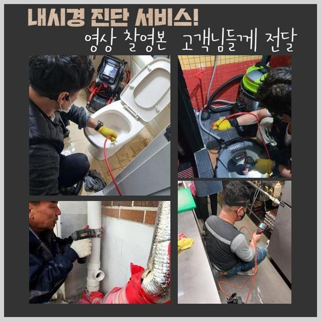
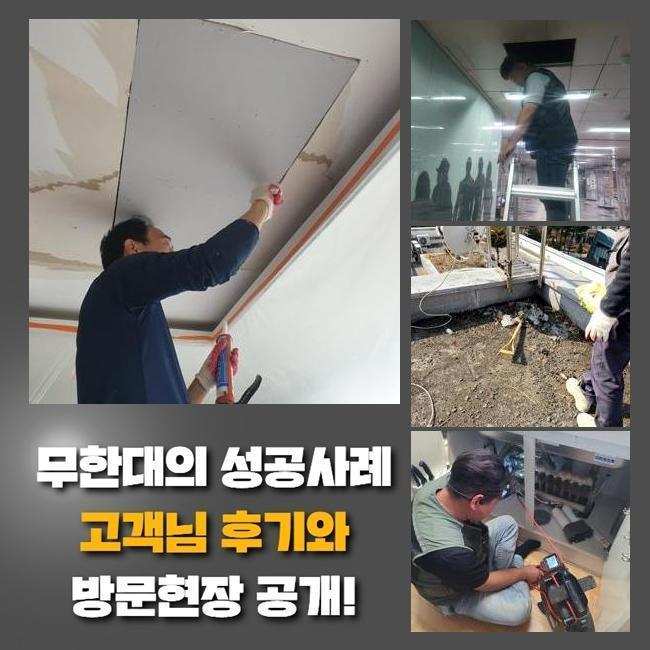
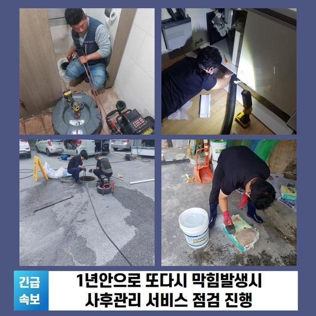
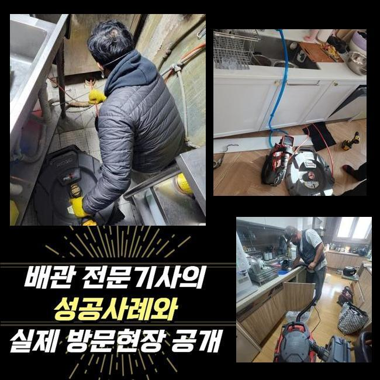
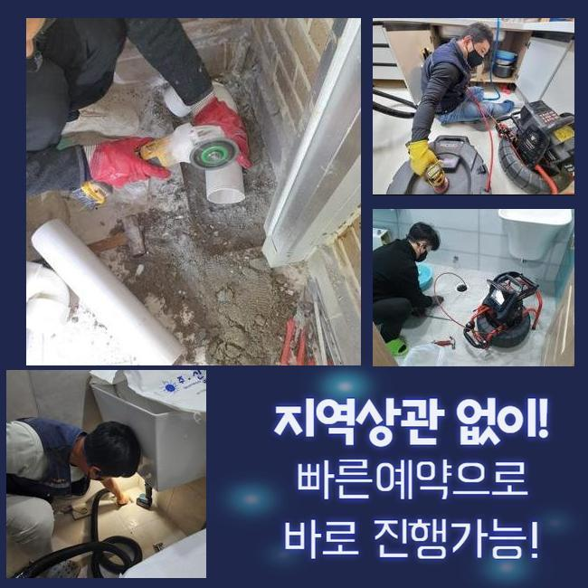
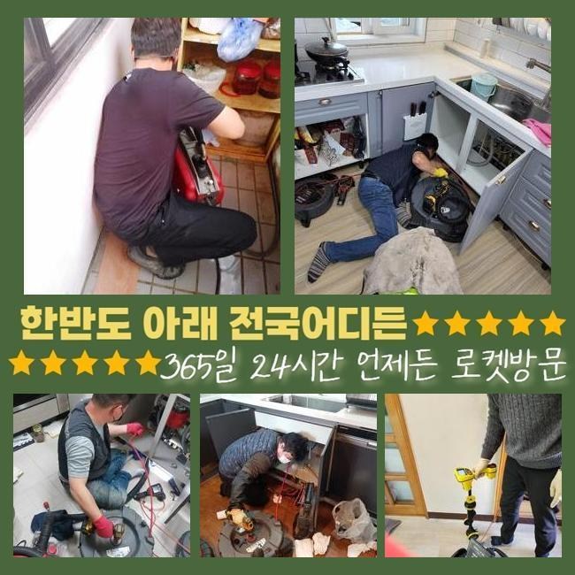
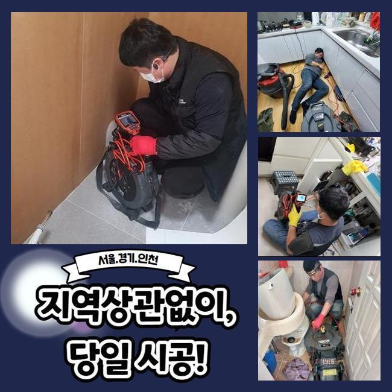

🏠 양주 유양동화장실역류 고암동 하수구뚫는곳 수리업체
양주 유양동 변기막힘 전문 시공 후기

📋 작업 개요
- 위치: 양주 유양동, 유양동, 양주
- 서비스 유형: 변기막힘, 하수구막힘, 배관막힘, 맨홀막힘, 누수수리, 역류해결, 뚫는업체, 배관청소, 고압세척, 설비공사
- 작업 일시: 2024. 10. 26. 9:16
- 업체명: 하수구수사대 (010-5615-2118)
🔍 문제 상황
양주 유양동화장실역류 고암동 하수구뚫는곳 수리업체
일반주택과 종합상가에는 때를 가리지 않고 하수시스템의 문제점이 발견됩니다
이와 같은 경우에는 최소로 피해를 막아내기 위해 알고난 후 바로 전문가를 통한 기술자에게 문의 해보시고 사고를 처리하는게 안전한 해결책입니다 지속되는 재정불황에 가능한 부담되지 않는 가격으로 의뢰하시고자 하시겠지요
고객님 입장에서는 가격적인 부분이 우선이겠지만 중요한 부분을 제쳐두고 의뢰인께 불합리한 점이 없도록 의뢰하려고 하시면 동일하게 비슷한 문제들의 반복으로 또다른 전문가를 찾으셔야 될 수도 있어요
오늘 갔던 곳은 배수구가 막혀서 발생하는 문제점을 오랜기간 해결하기 위해서 노력 해보시다가 급작스레 장사를 시작하게 되었다고 전달을 받았습니다
긴급하게 방문하여 문제점을 확인해보고 수리진행 방식과 비용등을 말씀 드리고 고객과의 확인을 마치고 작업과정을 이어나갔습니다
다른업체에서 고도의 압력을 이용하는 장비로 세정작업을 받았는데 몇년도 되지 않아 동일한 문제들이 발생했다고 말씀 해주셨습니다
현장을 살펴보니 일부 경사도에서 오류가 보였습니다
상가건물이라면 정기적으로 업체를 통해서 관리를 받는게 안전한 해결책입니다

🔎 원인 분석
💡 전문가 진단: 정밀 진단 장비를 사용하여 슬러지의 고착 여부를 판명하고 타격/세척 작업을 실시했습니다.
가게에 도착하여 1차적으로 하수를 내보내는 물저장고를 확인했습니다
현장이 크다보니 하나가 아니고 여러개로 설치 된 상태였는데 모두 막혀서 작동하지 못하고 있었습니다
저번에 말씀 해주셨던 다른 업체 작업과정에서 깨끗하게 처리하지 못해서 더욱 심하게 된 케이스였습니다
사례자분께 들어보니 저번에 할 때 가게 안쪽만 뚫는 작업을 하셨다고 알려주셔서 현재 배관의 상태를 꼼꼼하게 말씀 해드렸습니다
이러한 음식업종은 바깥쪽에 있는 배수관에 불순물이 적재되는 경우들이 잦으므로 맨홀뚜껑을 열어서 빠짐없이 확인하는게 필수입니다
높은 압을 사용하는 청소기기는 고객님의 편의를 위해서 가게의 통로에서 보이는 부분부터 진행하기로 했습니다
내시경노즐을 넣어 막힌 정도가 어느정도인지 체크한 결과 침전물로 장비가 들어가지 못했습니다
생각보다 심각해서 샤프트기기와 높은 압력을 사용하는 노즐을 투입하여 불순물을 제거해요
첫번째로 샤프트기기를 사용했지만 배관 초반부의 불순물만 나왔고 진행할 수 없는 심한 상황이라 작업들이 진행되지 못했습니다
이후엔 고압의 케이블을 사용해서 80도의 온수로 세정과정을 작업과정을 이어나갔습니다

🔧 작업 과정
장시간동안 작업을 하고 힘도 많이 드는 작업이라서 이러한 세척작업의 가격적인 면을 고민하시는데 합당한 수준에서 작업을 해드리니 편하게 문의주셨으면 합니다
고온의 세척과정으로 계속적으로 작업한 결과 기름덩어리와 물티슈 뭉치가 빠져나옵니다 음식업을 하는 가게에서 나오게 되는 종류예요
보통 기름같은 것들은 이해 할 수 있지만 물티슈를 이해하지 못하고 궁금해하시곤 하는데 이용객이 변기를 사용후쓰레기등을 넣어버리기 때문이예요
물티슈같은 종류는 그냥 나오지 못할뿐더러 섬유조직이 불어나서 하수관 안을 막는 원인이예요
걸러주는 정화조를 통하는 사용하고 난 오염수이지만 완전하게 확인하고 이물질은 걸러내야 하죠
분리배출을 하지 않는다면 지금의 경우와 같은 막힘사고가 일어나고 얼마 못가서 전문진에게 도움을 요청하셔서 비용을 들여 시공을 해야해요
전문적인 기술이 요구되는 검사들도 중요한 부분이지만 이용자의 주의사항 만으로도 건강한 하수설비를 유지하는 비법이 됩니다
기름기나 불순물은 배관으로 그냥 버리지 마시고 일정한 주기로 세척을 진행하는 것이 효과가 있습니다
상당량의 오염물질을 빼내고 내부를 비추는 기기를 넣어서 파악해보니 조금씩 하수가 흘러나가며 장기간 고객분을 힘들게 했던 하수관 문제를 해결 할 수 있었습니다
작업이 끝난 후에도 안을 보는 기기를 이용해 확인해보니 말끔합니다 의뢰인분께서도 모니터를 통해서 말끔한 배관 내부를 보실 수 있었습니다
노폐물을 완전히 처리했으니 기름이 떠있는 물이 끝난후 정상적인 순환까지 기다렸습니다
한참동안 물이 내려가게 해서 이물질들이 다 빠진후 정상적으로 맑은물이 배출되는 것까지 확인하고 마무리할 수 있었습니다
배관을 뚫고나서는 제대로 통수하는게 맞습니다
보편적으로 침전물이 뚫리면 해결됐다고 생각하실 수도 있지만 찌꺼기까지 싹 끄집어내야 막힘사고가 발생하지 않아요
반복되는 역류문제로 하수관에 부담을 주게되어 얼마 못가서 누수현상이 발생하며 대공사를 필요할 수 있어서 주의하시기 바랍니다
기기를 이용해 남은 이물질이 있는지 점검을 끝내고 모든작업을 종료할 수 있었어요


✅ 작업 완료
수도없이 많은 손님분들이 다니는 곳이라 일반적인 곳보다 막힘피해가 빈번하지만 사용상 주의를 한다면 지금처럼 아주 심한 사태까지 역류 문제들이 일어날 확률은 흔하지 않습니다
우리업체는 의뢰인께 불합리한 점이 없도록 운영한다는 것을 말씀 드리며 필요하실때 문의주시면 진심을 다해 해결 해드리겠습니다
막힌 배관은 간단히 기름기를 제거 해내고 끝이 나는 것이 아니기때문에 문제를 발생시키는 이유나 원인을 점검해서 다음으로 작업의 방식을 정하고 전문가에게 도움을 청하는게 안전합니다
필요하신 때에 문의 주세요 마음을 다해 응대하고 고민을 해결해 드리겠습니다




⚠️ 베란다 누수 및 방수 관리 방법
- ✅ 비가 많이 올 때 창틀 주변이나 아래층 천장에 얼룩이 생기는지 정기적으로 확인해 보세요.
- ✅ 우수관 주변 실리콘 마감이 들뜨거나 깨진 틈새가 있는지 손상 여부를 수시로 체크하세요.
- ✅ 베란다 바닥 타일의 줄눈(메지)이 소실되면 그 틈으로 물이 침투하여 누수가 유발됩니다.
- ✅ 누수 의심 증상 발견 시 방치하면 아래층 손실이 커지므로 즉시 전문가의 진단을 받으십시오.
💡 핵심 정리
- 확실한 장비 작업(내시경 점검 및 샤프트 스케일링)으로 원인을 뿌리 뽑습니다.
- 작업 후 1년 이내에 동일한 부위 재발 시 100% 무상 A/S 서비스를 보장합니다.
- 서울 · 경기 · 인천 전 지역에 24시간 언제든 긴급 출동할 수 있도록 항시 대기 중입니다.
❓ 자주 묻는 질문 (FAQ)
🚨 양주 유양동 변기막힘 문제로 고민이신가요?
정확한 원인 진단과 확실한 시공으로 재발 없는 해결을 약속드립니다.
24시간 긴급 출동 | 서울 · 경기 · 인천 전지역 | 1년 내 재발 시 무상 A/S